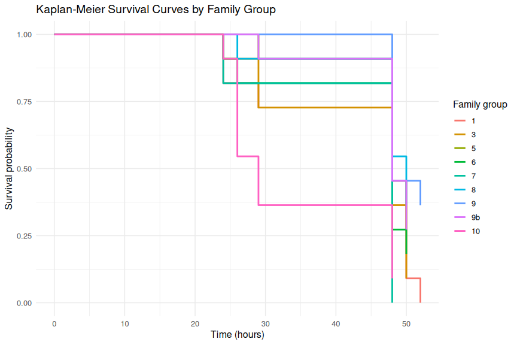

INTRO
This is analysis of a survivorship study set up and run by Maddy Bernstein (notebook entry). The goal of the study was to assess the survivorship of 9 different families of M.gigas oysters when exposed to heat stress at 36oC.
MATERIALS & METHODS
Juvenile M.gigas oysters were distributed across nine 12-well plates and submerged in 4mL of Instant Ocean (~15oC at beginning of experiment). Plates were incubated at 36oC and periodically assessed for mortalities over the course of 52hrs.
The post below was knitted from 00.00-mgig-heat-survivorship.Rmd (GitHub).
RESULTS
Overall mortality was high: 81 of 99 oysters (82%) died during the experiment, with a median survival time of 48 hours across all families.
Survival differed significantly among families (log-rank test: χ² = 21.1, df = 8, p = 0.007). Families 1 and 7 showed the highest mortality (100%; 11/11 deaths each). Family 10 had the lowest median survival time (29 hrs), indicating the fastest rate of mortality. Families 8 and 9 were the most resilient, with the fewest deaths (7/11 each) and median survival times of 50 and 48 hours, respectively.
Despite the significant global log-rank result, pairwise comparisons between all family pairs showed no significant differences after Benjamini-Hochberg correction (all adjusted p > 0.05), suggesting the overall significance is driven by the cumulative pattern across families rather than any single strong pairwise contrast.
1 BACKGROUND
This is a Kaplan-Meier survival analysis of 36oC heat stress of Magallana gigas oysters, conducted on 20260609 (GitHub repo) by Maddy Bernstein. It compares 9 different families bred/selected by the USDA.
Oysters were distributed across nine 12-well plates and submerged in 4mL of Instant Ocean (~15oC at beginning of experiment). Plates were incubated at 36oC and periodically assessed for mortalities over the course of 52hrs.
1.1 SETUP
1.1.1 Load packages
library(readr)
library(dplyr)
library(survival)
library(survminer)
library(ggplot2)
knitr::opts_chunk$set(
echo = TRUE, # Display code chunks
eval = TRUE, # Evaluate code chunks
warning = FALSE, # Hide warnings
message = FALSE, # Hide messages
comment = "", # Prevents appending '##' to beginning of lines in code output
results = 'hold', # Holds output so it's all printed together after code chunk
fig.path = "00.00-mgig-heat-survivorship-20260609/"
)1.1.2 Read in and view raw data
survivorship_raw <- read_csv(
"../data/20260609-36C-USDA-families/survivorship.csv",
show_col_types = FALSE
)
# Preview newly created object
cat("\n=== survivorship_raw: str() ===\n")
str(survivorship_raw)=== survivorship_raw: str() ===
spc_tbl_ [756 × 11] (S3: spec_tbl_df/tbl_df/tbl/data.frame)
$ plate_ID : chr [1:756] "plate-A" "plate-A" "plate-A" "plate-A" ...
$ plate_well : chr [1:756] "A01" "A02" "A03" "A04" ...
$ individual_id : num [1:756] 1 2 3 4 5 6 7 8 9 10 ...
$ familly_id.group : chr [1:756] "7" "9" "5" "6" ...
$ is_blank : logi [1:756] FALSE FALSE FALSE FALSE FALSE FALSE ...
$ timepoint_count : num [1:756] 0 0 0 0 0 0 0 0 0 0 ...
$ timepoint_hrs : num [1:756] 0 0 0 0 0 0 0 0 0 0 ...
$ alive.measurement: logi [1:756] TRUE TRUE TRUE TRUE TRUE TRUE ...
$ date : num [1:756] 6092026 6092026 6092026 6092026 6092026 ...
$ time : 'hms' num [1:756] 12:35:00 12:35:00 12:35:00 12:35:00 ...
..- attr(*, "units")= chr "secs"
$ notes : logi [1:756] NA NA NA NA NA NA ...
- attr(*, "spec")=
.. cols(
.. plate_ID = col_character(),
.. plate_well = col_character(),
.. individual_id = col_double(),
.. familly_id.group = col_character(),
.. is_blank = col_logical(),
.. timepoint_count = col_double(),
.. timepoint_hrs = col_double(),
.. alive.measurement = col_logical(),
.. date = col_double(),
.. time = col_time(format = ""),
.. notes = col_logical()
.. )
- attr(*, "problems")=<pointer: 0x63ffb62b0a10> 1.2 ANALYSIS
1.2.1 Clean and standardize columns used for survival analysis
survivorship_clean <- survivorship_raw %>%
mutate(
individual_id = as.character(individual_id),
family_group = as.character(`familly_id.group`),
timepoint_hrs = as.numeric(timepoint_hrs),
alive_chr = toupper(trimws(as.character(`alive.measurement`))),
alive = case_when(
alive_chr %in% c("TRUE", "T", "1", "YES", "Y") ~ TRUE,
alive_chr %in% c("FALSE", "F", "0", "NO", "N") ~ FALSE,
TRUE ~ NA
)
) %>%
select(
individual_id,
family_group,
timepoint_count,
timepoint_hrs,
alive,
date,
time,
everything()
)
# Preview newly created object
cat("\n=== survivorship_clean: str() ===\n")
str(survivorship_clean)
cat("\n=== survivorship_clean: summary(alive) ===\n")
summary(survivorship_clean$alive)=== survivorship_clean: str() ===
tibble [756 × 14] (S3: tbl_df/tbl/data.frame)
$ individual_id : chr [1:756] "1" "2" "3" "4" ...
$ family_group : chr [1:756] "7" "9" "5" "6" ...
$ timepoint_count : num [1:756] 0 0 0 0 0 0 0 0 0 0 ...
$ timepoint_hrs : num [1:756] 0 0 0 0 0 0 0 0 0 0 ...
$ alive : logi [1:756] TRUE TRUE TRUE TRUE TRUE TRUE ...
$ date : num [1:756] 6092026 6092026 6092026 6092026 6092026 ...
$ time : 'hms' num [1:756] 12:35:00 12:35:00 12:35:00 12:35:00 ...
..- attr(*, "units")= chr "secs"
$ plate_ID : chr [1:756] "plate-A" "plate-A" "plate-A" "plate-A" ...
$ plate_well : chr [1:756] "A01" "A02" "A03" "A04" ...
$ familly_id.group : chr [1:756] "7" "9" "5" "6" ...
$ is_blank : logi [1:756] FALSE FALSE FALSE FALSE FALSE FALSE ...
$ alive.measurement: logi [1:756] TRUE TRUE TRUE TRUE TRUE TRUE ...
$ notes : logi [1:756] NA NA NA NA NA NA ...
$ alive_chr : chr [1:756] "TRUE" "TRUE" "TRUE" "TRUE" ...
=== survivorship_clean: summary(alive) ===
Mode FALSE TRUE NAs
logical 265 428 63 1.2.2 Reduce repeated observations to one survival row per individual
individual_survival <- survivorship_clean %>%
filter(!is.na(individual_id), !is.na(timepoint_hrs), !is.na(alive)) %>%
arrange(individual_id, timepoint_hrs) %>%
group_by(individual_id) %>%
summarise(
family_group = first(family_group[!is.na(family_group)]),
event = if_else(any(!alive), 1L, 0L),
time_to_event = {
if (any(!alive)) {
min(timepoint_hrs[!alive])
} else {
max(timepoint_hrs)
}
},
n_observations = n(),
.groups = "drop"
)
# Preview newly created object
cat("\n=== individual_survival: str() ===\n")
str(individual_survival)
cat("\n=== individual_survival: summary(time_to_event) ===\n")
summary(individual_survival$time_to_event)
cat("\n=== individual_survival: table(event) ===\n")
table(individual_survival$event)=== individual_survival: str() ===
tibble [99 × 5] (S3: tbl_df/tbl/data.frame)
$ individual_id : chr [1:99] "1" "10" "11" "12" ...
$ family_group : chr [1:99] "7" "3" "7" "7" ...
$ event : int [1:99] 1 1 1 1 1 1 1 1 0 0 ...
$ time_to_event : num [1:99] 48 50 48 48 48 48 48 26 52 52 ...
$ n_observations: int [1:99] 7 7 7 7 7 7 7 7 7 7 ...
=== individual_survival: summary(time_to_event) ===
Min. 1st Qu. Median Mean 3rd Qu. Max.
24.00 48.00 48.00 44.72 50.00 52.00
=== individual_survival: table(event) ===
0 1
18 81 1.2.3 Create Surv object and fit Kaplan-Meier models
surv_object <- with(individual_survival, Surv(time = time_to_event, event = event))
km_fit_overall <- survfit(surv_object ~ 1, data = individual_survival)
km_fit_by_family <- survfit(surv_object ~ family_group, data = individual_survival)
# Preview newly created objects
cat("\n=== km_fit_overall ===\n")
print(km_fit_overall)
cat("\n=== km_fit_by_family ===\n")
print(km_fit_by_family)
cat("\n=== km_fit_overall: str() ===\n")
str(km_fit_overall)
cat("\n=== km_fit_by_family: str() ===\n")
str(km_fit_by_family)=== km_fit_overall ===
Call: survfit(formula = surv_object ~ 1, data = individual_survival)
n events median 0.95LCL 0.95UCL
[1,] 99 81 48 48 48
=== km_fit_by_family ===
Call: survfit(formula = surv_object ~ family_group, data = individual_survival)
n events median 0.95LCL 0.95UCL
family_group=1 11 11 48 48 NA
family_group=10 11 10 29 26 NA
family_group=3 11 10 48 48 NA
family_group=5 11 8 48 48 NA
family_group=6 11 9 48 48 NA
family_group=7 11 11 48 NA NA
family_group=8 11 7 50 48 NA
family_group=9 11 7 48 48 NA
family_group=9b 11 8 48 48 NA
=== km_fit_overall: str() ===
List of 17
$ n : int 99
$ time : num [1:6] 24 26 29 48 50 52
$ n.risk : num [1:6] 99 92 86 79 34 20
$ n.event : num [1:6] 7 6 7 45 14 2
$ n.censor : num [1:6] 0 0 0 0 0 18
$ surv : num [1:6] 0.929 0.869 0.798 0.343 0.202 ...
$ std.err : num [1:6] 0.0277 0.0391 0.0506 0.139 0.1997 ...
$ cumhaz : num [1:6] 0.0707 0.1359 0.2173 0.7869 1.1987 ...
$ std.chaz : num [1:6] 0.0267 0.0377 0.0487 0.0979 0.1473 ...
$ type : chr "right"
$ logse : logi TRUE
$ conf.int : num 0.95
$ conf.type: chr "log"
$ lower : num [1:6] 0.88 0.805 0.723 0.262 0.137 ...
$ upper : num [1:6] 0.981 0.938 0.881 0.451 0.299 ...
$ t0 : num 0
$ call : language survfit(formula = surv_object ~ 1, data = individual_survival)
- attr(*, "class")= chr "survfit"
=== km_fit_by_family: str() ===
List of 18
$ n : int [1:9] 11 11 11 11 11 11 11 11 11
$ time : num [1:36] 24 29 48 50 52 24 26 29 48 52 ...
$ n.risk : num [1:36] 11 9 8 5 1 11 10 6 4 1 ...
$ n.event : num [1:36] 2 1 3 4 1 1 4 2 3 0 ...
$ n.censor : num [1:36] 0 0 0 0 0 0 0 0 0 1 ...
$ surv : num [1:36] 0.8182 0.7273 0.4545 0.0909 0 ...
$ std.err : num [1:36] 0.142 0.185 0.33 0.953 Inf ...
$ cumhaz : num [1:36] 0.182 0.293 0.668 1.468 2.468 ...
$ std.chaz : num [1:36] 0.129 0.17 0.275 0.486 1.112 ...
$ strata : Named int [1:9] 5 5 5 4 5 2 4 2 4
..- attr(*, "names")= chr [1:9] "family_group=1" "family_group=10" "family_group=3" "family_group=5" ...
$ type : chr "right"
$ logse : logi TRUE
$ conf.int : num 0.95
$ conf.type: chr "log"
$ lower : num [1:36] 0.619 0.506 0.238 0.014 NA ...
$ upper : num [1:36] 1 1 0.868 0.589 NA ...
$ t0 : num 0
$ call : language survfit(formula = surv_object ~ family_group, data = individual_survival)
- attr(*, "class")= chr "survfit"1.2.4 Perform log-rank test to compare survival between families
logrank_test <- survdiff(surv_object ~ family_group, data = individual_survival)
# Display test results
cat("\n=== Log-rank test: survdiff() output ===\n")
print(logrank_test)
# Extract and report key statistics
cat("\n=== Log-Rank Test Summary ===\n")
cat("Chi-square statistic:", logrank_test$chisq, "\n")
cat("Degrees of freedom:", length(logrank_test$n) - 1, "\n")
cat("p-value:", 1 - pchisq(logrank_test$chisq, df = length(logrank_test$n) - 1), "\n")
cat("\nInterpretation:\n")
p_val <- 1 - pchisq(logrank_test$chisq, df = length(logrank_test$n) - 1)
if (p_val < 0.05) {
cat("p < 0.05: Family groups show SIGNIFICANTLY DIFFERENT survival (reject null hypothesis)\n")
} else {
cat("p >= 0.05: No significant difference in survival detected between family groups\n")
}=== Log-rank test: survdiff() output ===
Call:
survdiff(formula = surv_object ~ family_group, data = individual_survival)
N Observed Expected (O-E)^2/E (O-E)^2/V
family_group=1 11 11 8.81 0.54267 1.0179
family_group=10 11 10 4.71 5.94644 9.6692
family_group=3 11 10 8.55 0.24667 0.4561
family_group=5 11 8 10.45 0.57256 1.0981
family_group=6 11 9 8.72 0.00871 0.0164
family_group=7 11 11 7.22 1.97389 3.8135
family_group=8 11 7 10.88 1.38128 2.6734
family_group=9 11 7 11.22 1.58425 3.0942
family_group=9b 11 8 10.45 0.57256 1.0981
Chisq= 21.1 on 8 degrees of freedom, p= 0.007
=== Log-Rank Test Summary ===
Chi-square statistic: 21.122
Degrees of freedom: 8
p-value: 0.006830309
Interpretation:
p < 0.05: Family groups show SIGNIFICANTLY DIFFERENT survival (reject null hypothesis)1.2.5 Pairwise log-rank tests with BH correction
pairwise_results <- pairwise_survdiff(
Surv(time_to_event, event) ~ family_group,
data = individual_survival,
p.adjust.method = "BH"
)
cat("\n=== Pairwise log-rank test (BH-adjusted p-values) ===\n")
print(pairwise_results)
# Extract and display only significant pairs
p_mat <- pairwise_results$p.value
sig_pairs <- which(p_mat <= 0.05, arr.ind = TRUE)
cat("\n=== Significant pairwise comparisons (BH-adjusted p <= 0.05) ===\n")
if (nrow(sig_pairs) == 0) {
cat("No significant pairwise differences found.\n")
} else {
sig_df <- data.frame(
group1 = rownames(p_mat)[sig_pairs[, 1]],
group2 = colnames(p_mat)[sig_pairs[, 2]],
p_adjusted = p_mat[sig_pairs]
)
print(sig_df)
}=== Pairwise log-rank test (BH-adjusted p-values) ===
Pairwise comparisons using Log-Rank test
data: individual_survival and family_group
1 10 3 5 6 7 8 9
10 0.383 - - - - - - -
3 0.940 0.337 - - - - - -
5 0.369 0.099 0.383 - - - - -
6 0.758 0.315 0.856 0.574 - - - -
7 0.337 0.372 0.383 0.112 0.383 - - -
8 0.264 0.099 0.337 0.762 0.383 0.099 - -
9 0.167 0.099 0.264 0.694 0.369 0.099 0.940 -
9b 0.369 0.099 0.383 1.000 0.574 0.112 0.762 0.694
P value adjustment method: BH
=== Significant pairwise comparisons (BH-adjusted p <= 0.05) ===
No significant pairwise differences found.1.2.6 Convert Kaplan-Meier fit to plotting data frames
km_overall_df <- bind_rows(
data.frame(
time = 0,
surv = 1,
n_risk = km_fit_overall$n,
n_event = 0,
n_censor = 0
),
summary(km_fit_overall) %>%
with(
data.frame(
time = time,
surv = surv,
n_risk = n.risk,
n_event = n.event,
n_censor = n.censor
)
)
) %>%
arrange(time)
km_family_df <- bind_rows(
data.frame(
time = 0,
surv = 1,
n_risk = as.numeric(km_fit_by_family$n),
n_event = 0,
n_censor = 0,
strata = names(km_fit_by_family$strata)
),
summary(km_fit_by_family) %>%
with(
data.frame(
time = time,
surv = surv,
n_risk = n.risk,
n_event = n.event,
n_censor = n.censor,
strata = strata
)
)
) %>%
mutate(family_group = sub("^family_group=", "", strata)) %>%
arrange(family_group, time)
# Preview newly created objects
cat("\n=== km_overall_df: head() ===\n")
print(head(km_overall_df))
cat("\n=== km_overall_df: str() ===\n")
str(km_overall_df)
cat("\n=== km_family_df: head() ===\n")
print(head(km_family_df))
cat("\n=== km_family_df: str() ===\n")
str(km_family_df)=== km_overall_df: head() ===
time surv n_risk n_event n_censor
1 0 1.0000000 99 0 0
2 24 0.9292929 99 7 0
3 26 0.8686869 92 6 0
4 29 0.7979798 86 7 0
5 48 0.3434343 79 45 0
6 50 0.2020202 34 14 0
=== km_overall_df: str() ===
'data.frame': 7 obs. of 5 variables:
$ time : num 0 24 26 29 48 50 52
$ surv : num 1 0.929 0.869 0.798 0.343 ...
$ n_risk : num 99 99 92 86 79 34 20
$ n_event : num 0 7 6 7 45 14 2
$ n_censor: num 0 0 0 0 0 0 18
=== km_family_df: head() ===
time surv n_risk n_event n_censor strata family_group
1 0 1.00000000 11 0 0 family_group=1 1
2 24 0.81818182 11 2 0 family_group=1 1
3 29 0.72727273 9 1 0 family_group=1 1
4 48 0.45454545 8 3 0 family_group=1 1
5 50 0.09090909 5 4 0 family_group=1 1
6 52 0.00000000 1 1 0 family_group=1 1
=== km_family_df: str() ===
'data.frame': 39 obs. of 7 variables:
$ time : num 0 24 29 48 50 52 0 24 26 29 ...
$ surv : num 1 0.8182 0.7273 0.4545 0.0909 ...
$ n_risk : num 11 11 9 8 5 1 11 11 10 6 ...
$ n_event : num 0 2 1 3 4 1 0 1 4 2 ...
$ n_censor : num 0 0 0 0 0 0 0 0 0 0 ...
$ strata : chr "family_group=1" "family_group=1" "family_group=1" "family_group=1" ...
$ family_group: chr "1" "1" "1" "1" ...1.3 PLOTS
1.3.1 Plot Kaplan-Meier curves
1.3.1.1 Families
family_levels <- local({
lvls <- unique(km_family_df$family_group)
lvls[order(readr::parse_number(lvls), lvls)]
})
ggplot(
km_family_df %>% mutate(family_group = factor(family_group, levels = family_levels)),
aes(x = time, y = surv, color = family_group)
) +
geom_step(linewidth = 1.0) +
labs(
title = "Kaplan-Meier Survival Curves by Family Group",
x = "Time (hours)",
y = "Survival probability",
color = "Family group"
) +
ylim(0, 1) +
theme_minimal(base_size = 12)